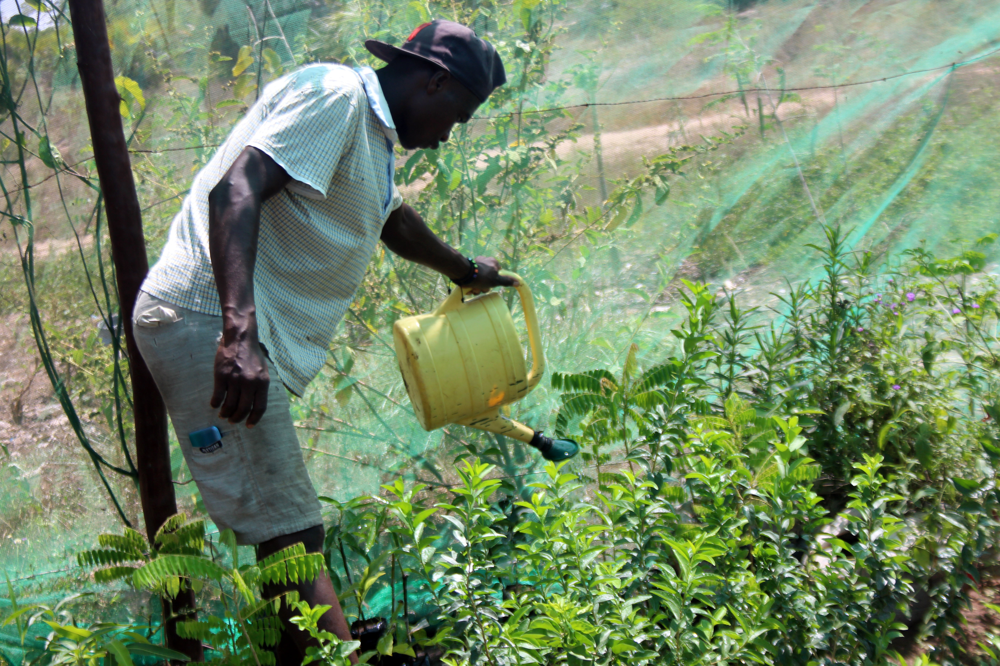
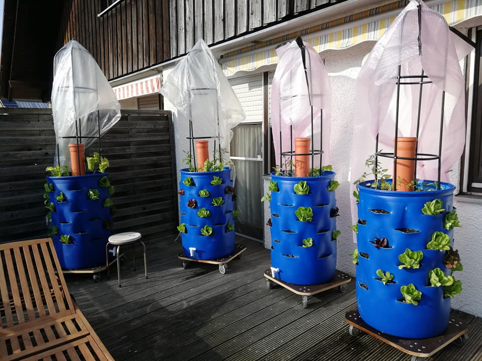
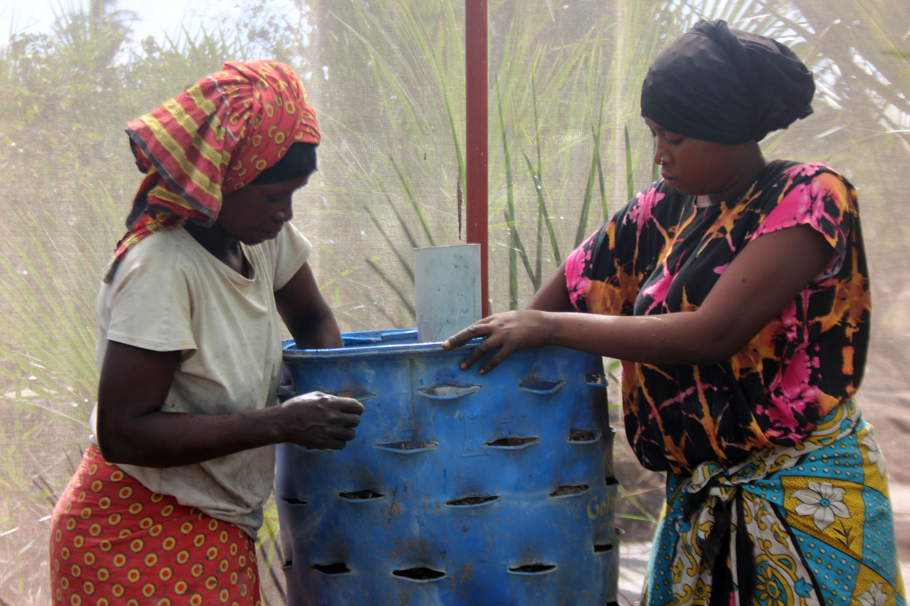
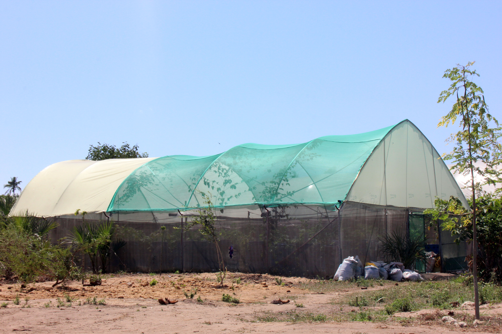
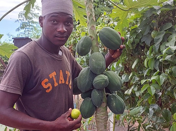
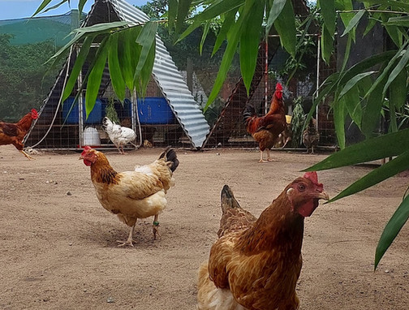
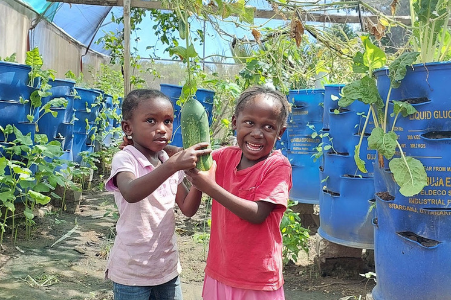
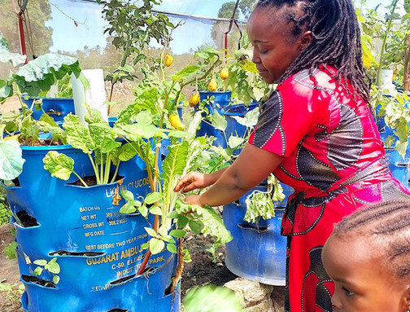

Das Team im Think Tank von FundiKipusa beobachtet den aktuellen Trend im Bereich der Arbeitskraefte Abwanderung aus Kenia mit grosser Sorge. Ohne Zweifel ist der Bedarf an Arbeitskraeften fuer das Gesundheitswesen in Deutschland in den naechsten Jahren ganz erheblich. Gleichzeitig, besteht in Kenya aber auch eine Unterversorgung im oeffentlichen Gesundheitswesen. Kenia entwickelt sich und nach unseren Analysen, wird es noch etwa 10 Jahre dauern, bevor ein Status Quo erreicht ist, indem die oeffentliche Hand in Kenia ueber ein soziales Netz verfuegt, um die sozial versicherte Gesundheitsvorsorge und Pflege aus eigener Kraft zu gewaehrleisten. In Deutschland fehlt es dagegen an willigen Arbeitskraeften fuer den Sektor. Dies begruendet sich aus dem demographischen Wandel und der ungeregelten Situation am Arbeitsmarkt, in Bezug auf die Aktivierung der Immigranten aus Krisengebieten fuer den deutschen Arbeitsmarkt.
Auch fuer dieses interne Problem Deutschlands, muss und soll eine Loesung von Innen innerhalb der naechsten 10 Jahre gefunden werden. Es kann nicht richtig sein, jetzt mit viel Geld und Lockangeboten, im globalen Sueden auf postkoloniale Art und Weise Arbeitskraefte abzuschoepfen. Wir vertreten den Ansatz, das zwar ein Austauschprogram kurzfristig eine Loesung sein kann, aber langfristig die Interessen aller gewart bleiben muessen. Die Situation: in Deutschland haben wir eine schnell wachsenden demographischen Wandel. Daraus ergibt sich ein erhoehter Bedarf an Pflege und Krankenpersonal. Diese Luecke kann auf Grund des Berufsbildes und der eingeschraenkten Nutzung von eingewanderten Arbeitskraeften zur Zeit nicht intern geloest werden. Ein Zeitrahmen von 10 Jahren sollte aber auf jeden Fall genug sein, um dieses jetzt latent Problem zu loesen. Dabei kann die Ausbeutung des globalen Suedens nicht als Ansatz dienen. Das ist in jeder Hinsicht falsch. In Kenia: Kenya entwickelt sich mit grosser Geschwindigkeit, zu einem funktionalen demokratischen Land mit ausreichender sozialer Sicherheit.
Dieser Prozess ist noch lange nicht abgeschlossen, aber auch hier scheint nach unseren Untersuchungen ein Zeitrahmen von 10 Jahren absolut realistisch. Die moralisch und etisch richtige Loesung nach FundiKipusa Richtlinien.
Mit ihren parkmatischen Ansaetzen hat FundiKipusa viele nachhaltige Arbeitsplaetze in Kenia geschaffen. Unsere Geschichte spricht fuer sich. Mit der Stephen Mc.Cormick LTD hat FundiKipusa CBO nun einen Commerciellen Partner in der freien Wirtschaft etabliert. Dabei gelten fuer alle Geschaefte der Mc. Cormick LTD die nachhaltigen Grundsaetze von FundiKipusa CBO. Wie sieht das Program zum Arbeitskraefte Austausch konkret aus ?
Unsere Regeln:
Online Interviews und Vorauswahl zur Verfuegung.
als Vermittler und gewaehrleistet die soziale Vertraeglichkeit der Abkommen.
Wenn Sie sich fuer unser klar gegliedertes und sozial vertraegliches Projekt entscheiden, foerdern Sie auch die Entwicklung des globalen Suedens in nachhaltiger Weise. Nachfolgende Parameter sind die Grundsteine einer jeden Vereinbarung.
Deutschland : Abbas Nargessi an@fundikipusa.co.ke oder heino@fundikipusa.co.ke
Kenia: Mark Murimi mark@stephenmccormick.co.ke